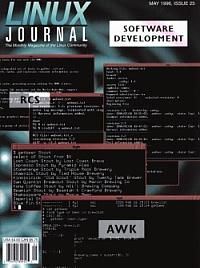

Shutdown Archive web server
Search:
Linux Journal
Issue #25/May 1996

Features
Fortran Programming Tools under Linux
by Steven Hughes
Are you a Fortran user migrating to Linux from a non-Unix environment? Steve shows you how to take the Linux plunge without sacrificing your “native” programming capability.
Compile C Faster on Linux
by Christopher W Fraser & David R Hanson
An introduction to lcc, a compiler 75% smaller than gcc that also compiles more quickly and helps prevent some porting bugs.
Introduction to Gawk
by Ian Gordon
How to speed up your programming tasks using the GNU version of awk.
News and Articles
Creating a Linux Firewall Using the TIS Toolkit
by Benjamin Ewy
Get flexible and reliable control of your network's interaction with the outside world.
Columns
Letters to the Editor
Stop the Presses
From the Publisher
First Conference on Freely Redistributable Software
Linux in the Real World
The Rough and Tumble World of the Linux-based ISP
Kernel Korner
The Devil's in the Details
Take Command
Keeping Track of Change with RCS
Book Review
IPv6: The New Internet Protocol
New Products
Directories & References
Consultants Directory
Archive Index
Shutdown Archive web server
Search:
Copyright © 1994 - 2018
Linux Journal
. All rights reserved.